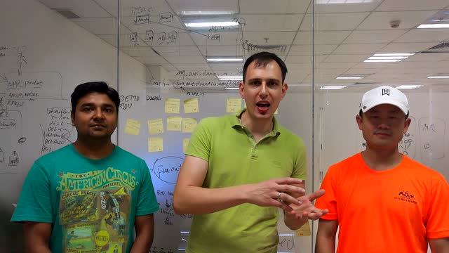
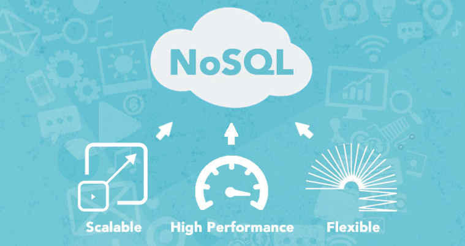
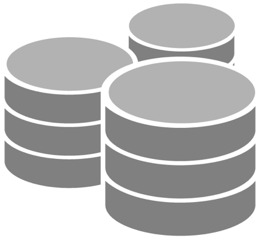
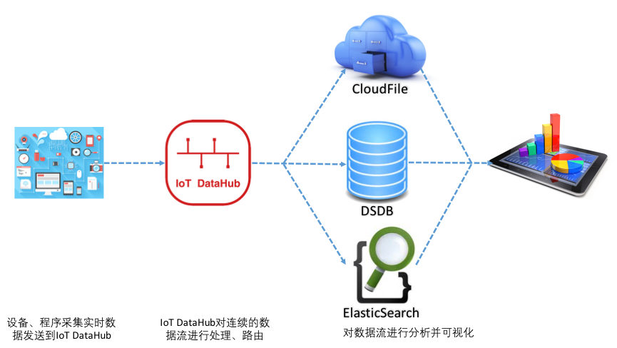
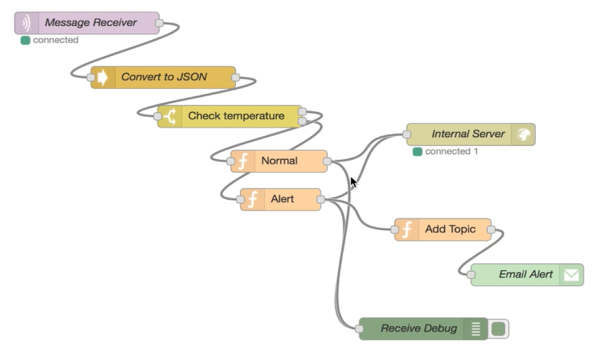
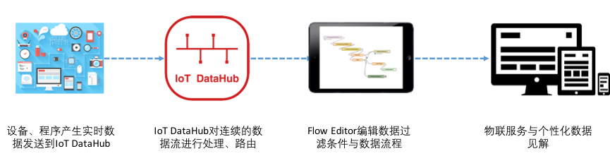
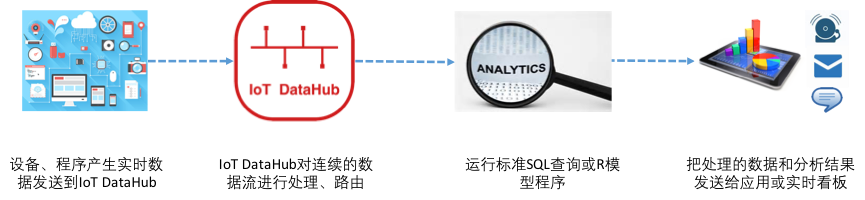
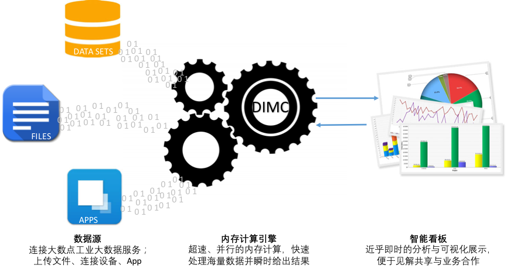

大数点工业大数据服务介绍

大数点工业物联网云平台提供了一系列服务，以帮助您快速轻松地构建和部署大数据应用程序。借助大数点云平台，您可以快速访问灵活的低成本IT资源、大数据存储和处理资源，这样您便可以迅速扩展几乎任何大数据应用程序，其中包括数据仓库、设备状态分析、预测性设备运维、事件驱动的动态流程、点击流分析、欺诈侦测、推荐引擎、物联网服务和生产质量预测等应用程序。借助大数点云平台，您无需在前期投入大量的时间和费用来构建和维护基础设施。相反，您可以精确地预置支持您的大数据应用程序所需的资源类型和大小。您可以根据需要访问（几乎是立即访问）任意数量的资源，而且只需为所使用的资源付费。
下面将分别从大数据的存储、处理、分析和展现几个层次分别介绍大数点工业物联网云平台的工业大数据服务。
数据仓库：PB量级PaaS数据仓库
DSDB
DSDB是大数点面向物联网服务的PB级数据仓库，可以方便客户使用现有的商业智能工具以一种经济的方式轻松分析和展现所有数据。通过存储量的自由伸缩来调节付费和成本，整体成本不到传统解决方案的10%。
DSDB除了提供面向大规模时序数据写入的NoSQL引擎，还包含支持传统关系型数据的SQL引擎，利用基于SQL的常用客户端及商业智能（BI）工具通过标准的ODBC和JDBC连接对结构化数据进行快速查询，并实现分布式并行查询。在大数点平台管理控制台即可轻松对数据仓库进行扩展或缩减。大数点DSDB自动修补数据仓库并将其备份，并按照用户定义的保留期存储备份。DSDB利用复制和连续备份来提高可用性并改善数据持久性，因而能从组件或节点故障中自动恢复。此外，为了保护您的中转数据和静态数据，DSDB支持专属私有云构建、SSL和AES-256加密和硬件安全模块（HSM）。
物联大数据存储数据库：安全、持久、可扩展的存储服务

DSDB NoSQL
大数点DSDB NoSQL是一种高度可扩展的分布式NoSQL数据库服务，提供快速而可预测的性能，能够实现无缝水平扩展。使用DSDB NoSQL，客户可以将运行和扩展分布式数据库的管理工作负担交给大数点平台，而无需担心硬件预配、设置、复制、软件更新或集群扩展等问题。 DSDB NoSQL旨在为所有应用程序和设备接入提供快速稳定、规模弹性的能力。服务平均延迟通常不超过10毫秒。随着数据量增多，应用程序性能要求提升，DSDB NoSQL会使用自动分区、分布式进程调度技术和SSD来满足您的吞吐量需求，并针对任意规模的数据库提供低延迟响应。
客户只需设计数据结构、创建数据库表并设置吞吐量，其余事情都交由DSDB NoSQL来代劳。无需再担心硬件或软件配置、创建设置和配置、软件更新、操作可靠的分布式数据库集群，或者随着扩展需要在多个实例间对数据进行分区等问题，只需尽享DSDB NoSQL服务之周全考虑。
DSDB NoSQL支持Key-Value键值数据结构，可以灵活地设计最适合您的设备配置、操控，和应用程序的最佳架构。

DSDB SQL
DSDB SQL是一项基于云计算的分布式关系数据库服务，基于大数点Erlang计算容器和PostgreSQL引擎构建。全面支持SQL标准，对您原来的应用程序保持最大兼容性。DSDB SQL可处理日常的数据库任务，如导入、导出、预置、补丁、备份、恢复、故障检测和修复。
DSDB SQL让客户能够轻松地使用复制功能来增强生产工作负载的可用性和可靠性。使用多可用区部署，可以执行关键任务工作负载，并且能够利用高可用性和内置的自动故障转移功能，从主数据库转移到同步复制的从数据库。通过只读副本，还可以利用扩展并超越单个数据库部署实例的容量限制，以应对读取量高的数据库。
通过云服务，客户无需预先投资，而且只需为所使用的资源付费。
大数据分析框架：大数据的云端分布式计算服务
DSDB MR
DSDB MR是基于Erlang实现的高实时性分布式Map-Reduce框架，提供Web服务和多重语言API，让企业、研究人员、数据分析师和开发人员轻松、经济高效地处理海量实时数据和历史数据。它基于大数点工业级Erlang容器的分布式实时计算基础架构运行。
DSDB MR能够即时、灵活地配置自身所需容量大小和内存计算能力，执行数据密集型应用计算，完成如设备状态分析，原始数据变换、Web索引、数据挖掘、日志文件分析、机器学习、财务分析、科学模拟和生物信息研究等任务。DSDB MR技术让客户专注于数据分析，无需担心费时的Map-Reduce计算集群设置、管理或调整，也无需担心所需要的计算能力。
DSDB MR可以有效解决需要实时、高效处理和分析大量数据的问题。借助Web服务界面，客户可以构建处理工作流程并以编程方式加载分析模型，只需关注分析目标和结果，无须管理计算集群的运行情况。
DSDB MR定价简单，预估轻松：按照每个算法模型实例以小时费率支付费用。
DSDB Reporting Store
DSDB Reporting Store是一项基于Elasticsearch构建的云端分析服务，让客户可以在大数点云中轻松地配置、使用Elasticsearch。Elasticsearch是针对日志分析、实时应用程序监控和点击流分析等使用案例的常见开源搜索和分析引擎。作为DSDB的配件服务，客户可以轻松配置和启用DSDB Reporting Store服务。该服务自动检测并替换出现故障的Elasticsearch节点，减少自建基础设施和Elasticsearch软件的运行开销。DSDB Elasticsearch服务让客户可以通过单个API调用或在大数点云端管理控制台中单击几次就可以轻松扩展集群。凭借DSDB Reporting Store服务，客户可以直接访问Elasticsearch开源API，以便与使用Elasticsearch环境的代码和应用程序无缝协作和对接。
DSDB R
DSDB R是另一项DSDB内建的云端统计分析服务，让客户通过Web页面或API轻松加载和部署基于R语言构建的数据分析模型，在云端实现基本统计、回归分析、信号处理运算、机器学习、预测以及复杂的高阶建模。
实时大数据分析：用于加载和分析实时数据流的强大服务
大数点物联网数据总线（IoT DataHub）
IoT DataHub是将流数据特别是设备实时数据加载到DSDB的最简单方式。它可以捕获流数据并将其自动加载到DSDB或其他第三方应用服务中，借助客户当前正在使用的商业智能工具、仪表盘或IoT DataHub物联网实时看板，实现近乎实时的分析。这是一项基于云计算的可靠服务，可以自动扩展以匹配数据吞吐量，并且无需持续管理。它还可以在加载／采集数据过程中对其进行批处理、过滤、压缩和加密，从而优化数据路由和最大程度地减少目的地使用的存储量，同时提高安全性。客户可以从大数点云平台管理控制台轻松创建IoT DataHub传输流，通过点击即可对其进行配置，并开始将数据从成千上万个数据源发送到数据流中。所有这些操作只需几分钟即可完成。
借助大数点IoT DataHub，客户只需要为通过服务传送的数据流付费。没有最低费用和启动成本。


IoT DataHub流编辑（Flow Editor）
大数点物联网总线流编辑Flow Editor是基于Web的服务，通过可视化的界面和模块拖拽与组合，可以构建用于处理或分析流数据的自定义应用程序、过滤模块和逻辑流程，以满足特定应用场景需求和物联网服务需求。客户可以将来自数万个设备源、事件源的状态流、事件流、点击流、日志采集和社交媒体等数据持续添加到自建的数据流Flow中，在数秒内，您所创建的Flow便可以从数据流读取和处理数据，生成服务。

Stream Analytics
Stream Analytics是使用标准SQL或R语言进行流数据实时处理的云端分析服务。使用Stream Analytics，所有开发者都可以简单地使用SQL查询或R程序来构建实时计算，例如在连续的数据流上的过滤、转换和聚集，而不需要学习更多新的编程技巧。

商业智能：快速的云端BI
DSDB 看板
DSDB看板是一项快速且易于使用的云技术商业智能（BI）服务，它使组织内的所有员工都能轻松构建可视化内容、执行临时分析并快速从数据中获得业务见解。DSDB看板使用基于Erlang构建的新型、运行超快的并行内存式计算引擎DIMC来快速执行高级计算和呈现可视化内容。DSDB看板可与大数点云平台的数据服务自动集成。使组织能够扩展至数十万用户，并通过DIMC引擎为用户提供快速响应的查询功能。
不同于传统的BI解决方案，使用DSDB看板既简单又快捷。登录时，DSDB看板会自动发现存储在DSDB NoSQL、DSDB SQL、DSDB MR、ElasticSearch和IoT DataHub等大数点平台服务中的数据。您可以选择由DSDB 看板发现的任何数据集并在几分钟内从该数据中获得见解。DSDB看板会格式化数据并实现可视化，无需客户手动提取、转换和加载（ETL）数据或投资昂贵的ETL工具。大数点分布式计算引擎支持大量计算，可帮助客户从分析中获得有价值的见解，而且不必为预置或管理基础设施而担心。客户可以按看板用户数支付较低的月租费用。借助DSDB看板，客户无需承担巨大的前期成本即可向所有人员提供丰富的BI功能。

机器学习：高度可扩展的智能预测分析
DSD ML
DSD ML是一项用于构建机器学习模型并生成预测结果的云端服务，可以帮助开发稳定且可扩展的智能应用程序。借助DSD ML，您可以使用强大的机器学习技术而无需在机器学习算法和技术领域拥有深厚的背景。
DSD ML目前使用行业标准的逻辑回归算法生成模型，基于Reinforcement Learning实现数据源状态和趋势的分析以及在线反馈控制，有效帮助企业实现设备的预测性维护和业务流程动态优化。使用DSD ML构建机器学习模型的流程包括三项操作：数据分析、模型训练和评估。数据分析步骤会对数据的分布进行计算并以可视化方式呈现，同时向客户建议可以优化模型训练流程的转换方法。模型训练步骤会在转换后的数据中寻找并存储预测性模式。在可选的最终步骤中，会对模型进行准确性评估。
DSD ML将强大的机器学习算法和交互式视觉工具合二为一，带领客户轻松创建、评估和部署机器学习模型。其内置的的数据转换功能可以确保输入的数据集能够无缝的转换，从而最大限度地保证模型的预测质量。模型构建完成后，服务所配备的直观的模型评估和精细调整控制台可以帮助您理解其优势和弱点，然后相应地调整性能以符合业务目标。
FAQ
-
DSDB适用于哪些场景？ DSDB适用于任何需要大量数据存储和处理的场景，特别适合大规模时序数据的处理。作为工业级实时数据库，在物联网应用、能源管理、企业资源管理、生产计划、产线监控、股票投资等有大量数据采集和处理需求的场景均可部署，使企业、研究人员、开发人员、分析师高效、经济轻松地处理海量数据。
-
什么是IoT DataHub，跟DSDB有什么关系？ IoT DataHub是大数点为物联网应用和工业环境提供的实时数据采集和接入通道，称为物联网数据总线，但也可以用于其他高实时性要求的数据采集和接入环境，如外汇、期货报价等。IoT DataHub基于高性能分布式计算集群实现，具有极高的实时性能和可靠性。IoT DataHub为客户提供多种语言的接入端SDK，包括C/C++、Java、C#、Python、Javascript、Ruby等。IoT DataHub一般作为DSDB的实时数据源，对DSDB有天然的集成模式。IoT DataHub还提供基于Web的可视化数据流管理和过滤服务，方便灵活管理各种数据流并创建流程服务。除此之外，IoT DataHub还提供插件框架，方便用户实现对数据流进行实时的流处理和分析。
-
DSDB 可以独立于IoT DataHub使用吗？ 可以。但为了实现更加流畅、稳定和可靠的工业实时数据采集、处理和分析，建议将DSDB与IoT DataHub配合使用，享受更多实时数据流处理的服务。
-
DSDB 支持什么系统、环境的数据采集？ DSDB支持跨平台数据采集，无论是设备、 移动应用、Web页面、HTML5还是企业系统的数据。
-
相较于其它产品，DSDB 有什么优势、区别或是特点呢？ DSDB是一个可水平拓展的高实时、分布式的数据仓库。能灵活自动的配置自身所需容量，并且无缝拓展以匹配所需数据吞吐量。支持全量数据采集，完整的历史数据回溯。内建大数据分析引擎、商业智能引擎和实时看板，实现数据的实时统计、分析和结果输出。系统拥有99.9999999%的可靠性，提供7*24小时的不间断服务。
-
DSDB 可以同时满足多少数据处理需求？ 作为云端的分布式数据仓库，DSDB通过自动水平扩展满足PB级的数据存储和处理需求。DSDB能达到平均每秒 16000个数据读取、查询、更新的处理量；PUT和GET的延迟通常小于10毫秒 。
-
DSDB形成的数据处理结果是如何展示的？ DSDB内置数据实时看板，在云端提供基本的数据读、写状态展示和数据统计。企业也可以根据自身需求、业务流程定制图表或对接第三方GUI工具，如Kibana。
-
DSDB提供哪些用户权限管理？ 创建者/管理员具有配置连接，创建数据空间、创建数据分析流程、创建看板实例、数据读写等权限控制，并且管理子账户的操作权限。
-
如何开始使用DSDB？ 客户可以有两种方式开始使用大数点DSDB服务：1）公有云模式，客户需要到大数点开放平台http://dev.dasudian.com注册成为大数点平台用户，登录平台创建DSDB服务实例，即可使用；2）私有云模式，拨打0755-23765783联系我们的商务团队，沟通确认具体的私有云建设方案后，大数点技术团队会为客户在其提供的基础设施上部署专属的DSDB数据仓库。
-
如果我没有编程基础，能使用DSDB 吗？ DSDB的接入和数据处理服务一般需要技术工程师协助进行，在接入和配置完成后，可视化和报表功能可由非开发人员直接使用。
-
DSDB 感觉很复杂，你们能提供培训吗？ 我们会提供详细的DSDB使用手册、教程视频、Demo示例，在您使用我们服务时，我们提供5*24小时的技术咨询服务。对于VIP客户，我们将提供上门的培训服务。
-
DSDB 有哪些数据安全机制,如何保证数据的安全性？ 大数点的业务模式是向企业客户收费，我们提供专业的产品和服务，并且将客户数据安全放在第一位，数据接入需要验证数据源的合法性，数据传输过程中都是被加密的，且传输信道都基于SSL进行保护。在云端存储的数据都得到AES-256和硬件安全模块（HSM）等机制的多方位保护。另外，DSDB严格控制数据访问和管理权限，除非客户直接授权工作人员登陆，否则工作人员无权访问用户数据。
-
我能不能在我们自己的环境中搭建DSDB？ 针对有需要私有云部署的企业，请拨打0755-23765783联系我们的商务团队，以便我们深入了解您的需求为您做出最佳的私有云部署方案。
-
我在 DSDB 上的数据可不可以导出？ DSDB包含基于Key-Value的NoSQL数据存储类型和关系型SQL数据存储类型，客户可根据自身的数据存储类型，通过我们提供的数据导出工具自行或在大数点技术人员的辅助下安全导出数据。NoSQL数据一般以JSON文档形式被导出，而SQL数据以标准SQL Dump被导出。
-
除了R语言和SQL，我还可以用其他工具构建分析模型吗？ 目前DSDB和IoT DataHub只支持R语言和基于SQL查询的建模环境，若有特殊需求，请联系大数点商务，我们会尽力为您提供定制化的集成服务。
- DSDB 是如何收费的？ 大数点DSDB服务可按月、年套餐收费，或按使用量（存储量、分析量、看板量）收费，或具体的定制服务收费，DSDB提供在一定存储量、API调用次数下的产品试用服务，帮助企业在决定付费使用前体验DSDB的强大功能；具体收费标准请点击：https://dev.dasudian.com/price ，或拨打0755-23765783联系我们的商务团队。
DEMOS
IoT DataHub SDK集成
https://github.com/Dasudian/IoTDataHub-demo-csharp
https://github.com/Dasudian/IoTDataHub-demo-c
https://github.com/Dasudian/IoTDataHub-demo-java
https://github.com/Dasudian/IoTDataHub-demo-js
https://github.com/Dasudian/IoTDataHub-demo-python
https://github.com/Dasudian/IoTDataHub-demo-android
https://github.com/Dasudian/IoTDataHub-demo-ios
DSDB Client使用
https://github.com/Dasudian/dsdb-demo-java
https://github.com/Dasudian/dsdb-demo-c
https://github.com/Dasudian/dsdb-demo-cpp
https://github.com/Dasudian/dsdb-demo-python
https://github.com/Dasudian/dsdb-demo-php